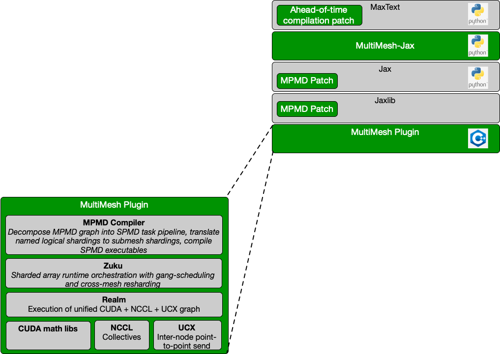
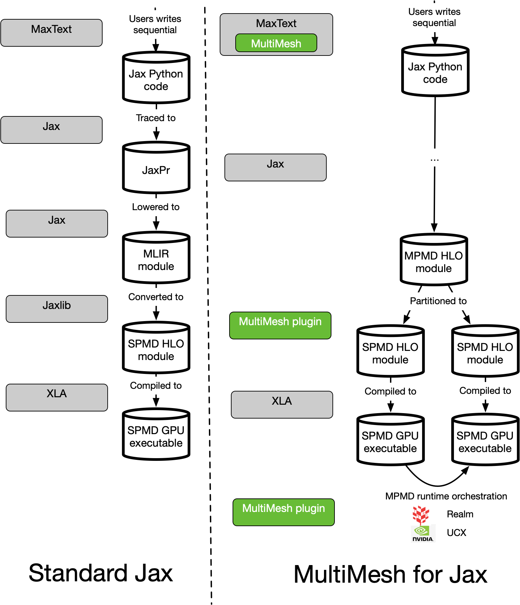

MultiMesh for JAX Architeture Overview#
MultiMesh works through a combination of compiler and runtime support for multiple-program, multiple data (MPMD). In contrast to single-program, multiple data (SPMD) where all processors are executing the same work on different partitions of the data, MPMD enable complex task pipelines with processor submeshes executing different tasks within a workflow. In deep learning, SPMD strategies encompass things like data parallelism, tensor parallelism, fully-sharded data parallelism. Pipeline parallelism strategies such as 1F1B or zero-bubble, however, require MPMD programs. The MultiMesh stack augments Jax and XLA with with the ability to express MPMD pipelines. This MPMD parallelism can be combined with existing supporting for SPMD parallelism to express strategies like 3D parallelism. Here we show the basic architecture of MultiMesh with MaxText.

Python APIs#
MultiMesh relies on ahead-of-time compilation in Jax using AUTO shardings.
Rather than binding shards directly to a physical mesh prior JIT compilation,
MultiMesh captures “logical shardings” for tensors and translates them
to submesh shardings within a global JIT computation. Jax model code
is either minimimally modified or not modified at all. At the framework-level
in MaxText, we apply modest patches for converting MaxText to use
the ahead-of-time, AUTO compilation.
Generally, when jax_plugins.multimesh.init is invoked, it
patches Jax functions to map to MPMD-compatible versions
(e.g. with_sharding_contraints). MultMesh-specific calls are then
insrted into the StableHLO module that gets passed to the compiler backend.
PjRt Plugin#
Most of the functionality of MultiMesh is contained within a
PjRt plugin.
Similar to the way CUDA and other device-specific backends are built and used,
MultiMesh is installed as a jax_plugins namespace module and loaded as the
backend by jaxlib when JAX_PLATFORMS=multimesh is given.
Compiler#
Only the MultiMesh plugin can compile and run the modules produced when MultiMesh is imported and initialized since non-standard custom calls are introduced. The compiler splits the MPMD HLO module into a pipeline of SPMD tasks with data movement and scheduling across SPMD tasks handled by the underlying MPMD runtime (see figure).

Realm#
MultiMesh (and the runtime Zuku) do not directly interact with CUDA or other device-specific libraries. Instead they manage operations through a hardware-abstraction layer provided by the Realm runtime (distributd within the Legion project). Realm provides control- and data-plane operations with a simple event-based model that unifies all the different device libraries into a common event loop.
Patches for Jax and Jaxlib#
At present, the MPMD shardings used are not natively supported by Jax and Jaxlib. Patches are therefore currently required to support submeshes Jax. Efforts are underway to support this submesh sharding model within upstream Jax, but more design and implementation work is required.